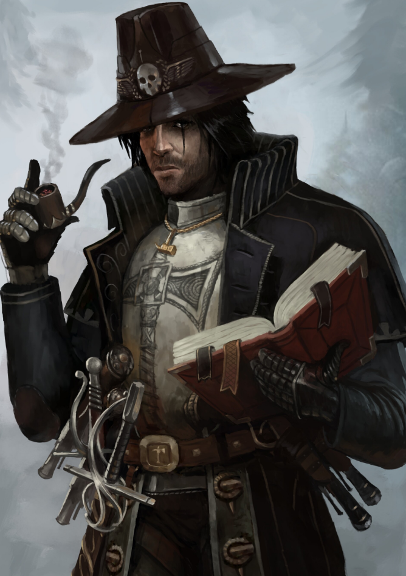

Dossier Inquisitorial 701.M41
L’ennemi le plus dangereux de l’Imperium ne vient pas toujours de l’extérieur. Il naît souvent au cœur même de l’Humanité.
L’Ordo Hereticus est chargé de traquer cette corruption interne. Cultes déviants, prêtres corrompus, gouverneurs défaillants, populations contaminées par des croyances interdites. Rien n’échappe à son regard.

MANDAT SACRÉ
Là où la foi vacille, l’hérésie s’installe. Et là où l’hérésie s’installe, la chute commence.
Les Inquisiteurs de cet Ordo ne combattent pas uniquement des ennemis visibles. Ils traquent des idées. Des mots. Des pensées.
Une rumeur peut suffire à déclencher une enquête. Une prière déformée peut mener à une exécution. Une déviation minime peut condamner une cité entière.
Leur lien avec l’Adepta Sororitas est étroit. Les Sœurs de Bataille servent souvent de bras armé à leurs décisions. Là où l’Inquisiteur juge, les Sororitas purgent.
MÉTHODES ET PURGES
Mais l’Ordo Hereticus ne se limite pas à la destruction physique. Il infiltre, interroge, torture, manipule. Il arrache la vérité, quelle qu’elle soit.
Les méthodes utilisées sont brutales. Elles le sont parce que la menace l’est davantage.
Car l’hérésie est insidieuse. Elle ne se manifeste pas toujours par des armes ou des mutations. Elle commence souvent par un doute.
Et dans l’Imperium, le doute est déjà une faiblesse.
HÉRITAGE DE TERREUR
Les purges menées par l’Ordo Hereticus sont nombreuses. Mondes nettoyés. Secteurs entiers placés sous surveillance. Populations réduites pour empêcher la propagation.
Certains considèrent ces actions comme excessives. Ces voix disparaissent généralement avant de pouvoir convaincre qui que ce soit.
Il faut comprendre ceci. L’Ordo Hereticus ne protège pas seulement l’Imperium. Il protège l’idée même de ce que doit être l’Humanité.
Et tout ce qui s’en éloigne, même légèrement, est considéré comme une menace.
Fin de l’extrait. Toute suspicion d’hérésie doit être signalée immédiatement. L’inaction est considérée comme complicité.